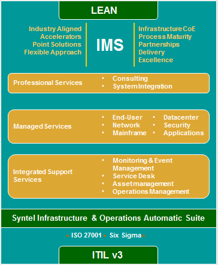

Enabling Scalable State-of-the-art Infrastructure
Overview
Syntel’s flexible engagement models are designed to bridge the gaps in your IT support, with state-of-the-art infrastructure management tools and practices.
Our Services
Decipher your IT infrastructure needs with Syntel's end-to-end IT IMS offerings . Our holistic approach and comprehensive review of your business processes and systems transform your IT infrastructure, using best practices for more than just a quick fix.

Syntel also offers its Agile consulting capabilities to engage and deliver quick, on-time and top quality results to its customers.
Why Syntel?
- 24x7 application monitoring for availability, performance checks and system alerts on potential incidents
- Syntel’s in-house IntelliTransfer methodology—for a streamlined process knowledge transition
- Increased operations agility and adaptability
- Reduced service disruptions, shared risks in transformation, consolidation, and new innovation deployment
- Service desk support, user support and application restoration services
- Root cause analysis, break-fix and preventive maintenance services